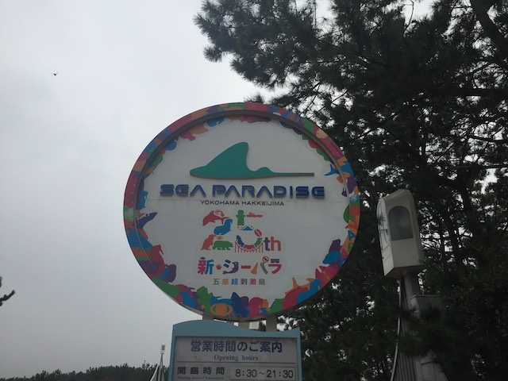
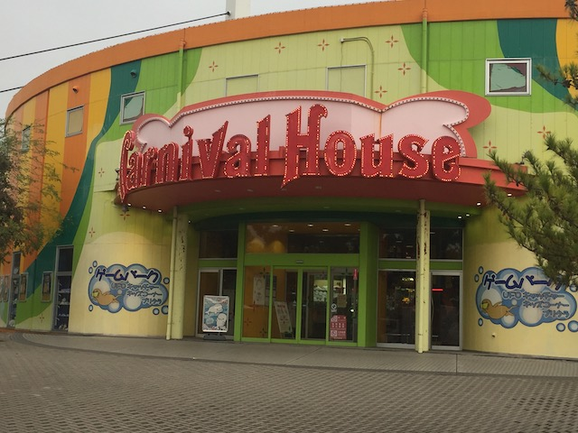
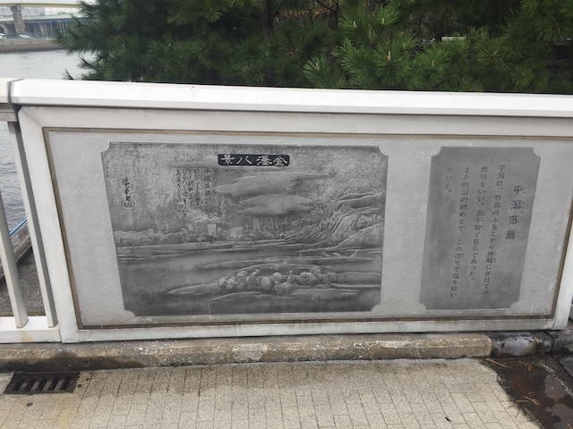
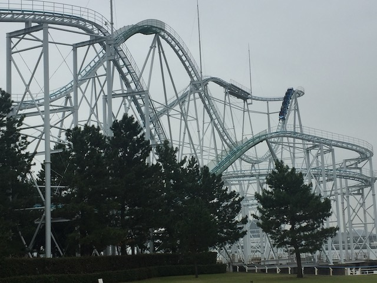
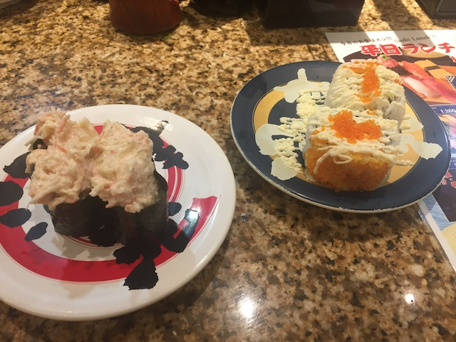
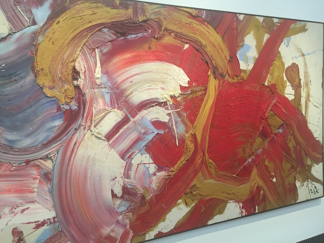

| |
JAPAN 2018!!! =)
Osaka Universal Studios Japan Parque Espana Nagashima Spaland
Hiroshima & Kyoto Tobu Zoo Fuji-Q Highlands
Tokyo Joypolis Tokyo Dome City Yomiuriland Sea Paradise Hamanako Pal Pal Tokyo Disney Resort Yokohama Cosmoworld
Toshimaen
Another day, another park in Japan. Hmm. I wonder where we're gonna be going today (OK. This photo really should've been retaken),
 After a long trip on the local Keihintohoku Line, we have another special line to head on.
After a long trip on the local Keihintohoku Line, we have another special line to head on.
Today's soda from Japanese Vending Machines is Pop! (God damn Midwesterners making it difficult to google this soda! It's called Soda! Get it right!) Not the first time I saw this as it is avaliable in Rocket Fizz, but hey. It's a good soda.
 You know why we're stopping over here.
You know why we're stopping over here.

Yep. Today's park is Sea Paradise. Home of one attraction that captivated me for over a decade.
Crossing the bridge over to Sea Paradise!
So excited to finally be riding this.
I wasn't sure if it was going to work out today thanks to all the rain and bad weather today, but hey. We are able to make it to Sea Paradise and have fun.
Nothing. I'm hopping on right now bitch! =P
Wait what? Blue Fall has a UFO theme!? I thought it was just a big drop tower painted blue because it's the colors of the sky and the ocean! This is confusing me!
Hey! It's been sprinkling this morning (Thank god the park is still open and not closed thanks to bad weather), so here! Have a poncho while riding Blue Fall!
OK. I'm sure you know about Blue Fall's "secret" (I'm normally very serious about stopping ride spoilers, but this is so public that I'm not gonna bother) fake drop, where it drops 10 ft and stops. It's fun and all. I liked that. But what I didn't expect was just how abrupt the fake drop stop was! HOLY CRAP!!! You just decelerate so abruptly that it's jarring. It's so sudden that it practicaly feels like a cliff jumping landing!

No! There are no funhouse mirrors in there. You're still just feeling the effects of Blue Fall.
I know all the dolphins fled the Earth after trying to warn us, but you can still come see them. Just hop in my UFO.
Something to note about Sea Paradise. This is a very big park, but without a ton of rides (I know it's mainly an aquarium first, but this park could definetly use another good attraction). So yeah. Expect to be walking a lot.
Blah. They have a bus for you lazy assholes. So don't worry.

I kind of wish I spoke Japanese so I could understand what the hell this is.
 OK. The park isn't just Blue Fall. They also have a roller coaster here worth checking out.
OK. The park isn't just Blue Fall. They also have a roller coaster here worth checking out.
 Interesting coaster cars. But hey. I know this ride used to have OTSRs, so I'm happy to be riding with lap bars.
Interesting coaster cars. But hey. I know this ride used to have OTSRs, so I'm happy to be riding with lap bars.
Surf Coaster is....an intersting ride.
 FAKE HELIX OF DEATH (Surf Coaster has a lot of those)!!!!
FAKE HELIX OF DEATH (Surf Coaster has a lot of those)!!!!
Just looking around at the surrounding area from the observation tour.
I miss Japan. But hey, Sea Paradise is only a 10 minute Uber ride and 80 days of sailing away. =P
 Ah. That's a much better view. =)
Ah. That's a much better view. =)
 Fun fact. Surf Coaster got it's name because it's literally built right over the ocean. Which is pretty cool.
Fun fact. Surf Coaster got it's name because it's literally built right over the ocean. Which is pretty cool.
Wanna take a break from the ocean and sea creatures? Come check out the arctic in our upcharge ice house!
Sorry folks. The Drunken Barrels are closed.
This may be just an ordinary pirate ship, but hey! One of the few rides here aside from Blue Fall & Surf Coaster!

Might as well get another ride on Surf Coaster as well.
WEE!!! AIRTIME!!!
 Surf Coaster is a fun coaster and all, but I will admit that it does have some...awkward transitions that I imagine would've had some headbanging with OTSRs. I know people claim it didn't back when it did, but it doesn't matter now.
Surf Coaster is a fun coaster and all, but I will admit that it does have some...awkward transitions that I imagine would've had some headbanging with OTSRs. I know people claim it didn't back when it did, but it doesn't matter now.
 Ugh. I see that Sea Paradise has crabs.
Ugh. I see that Sea Paradise has crabs.
No problem Sea Paradise. Your a fun little park to spend a couple hours in. Hope to check out the animals next time.
Really like the artwork at the Hakkeijima train station that showcases that this stop is primarily for Sea Paradise.
So apparently these are drawings done by the local children to represent all the animals at Sea Paradise (despite the fact that they're all drawing land animals and Sea Paradise is about sea creatures). Nice little cute touch.
So Japan has not only the super fancy high tech toilets only in Japan, but it also has the opposite extreme, and have the old school squat toilets found around the 3rd world. I'm assuming they're primarily around the rural areas of Japan, but it's still quite a contrast.
Hop on the train and let's head to our next destination.
Oh crap! Did the rain start up again!?
God damn it! I was worried about missing Sea Paradise thanks to rain earlier in the morning, but it let up and was able to do that park! But now thanks to the rain...
Yokohama Cosmoworld. The plan was to do Sea Paradise and then hit Yokohama Cosmoworld afterwards.
However, thanks to this rain, all the major rides in the park are closed. Lame. =(
Hmm. Should we hit up the mall? Nah, I've got better sh*t to do in Japan.
Sorry Vanish. You look fun, but it looks like I will not be riding you today.
DAMN YOU RAIN!!!
Hello really fancy hotel with a great view.
Well, Yokohama Cosmoworld was a bust. What else can we do in Yokohama?
Yo America! How many Snoopy stores do you have in your malls!? Oh right. 0, Japan 1. America 0.
Hmm. That's an intersting playgr...SH*T!!! THAT'S MODERN ART!!!
 OK. I've been in Japan for how long and haven't tried local sushi yet!? Yeah, it's time for that to change.
OK. I've been in Japan for how long and haven't tried local sushi yet!? Yeah, it's time for that to change.

OK. I'm pretty sure this'll be a controversial opinion, but I actually prefered the Sushi back home in America to the real stuff here. Now, I'm not a big seafood person. The majority of seafood, I don't like, with only a few exceptions. So sushi wasn't something I was dying to try. However, I found really good Sushi in Santa Monica which converted me (Those Baked Salmon Rolls are so good!). So I figured that the Sushi in Japan must be even better, because....this is where it came from. However, this was good sushi and all. But I still prefer Sushi Stop in Santa Monica. I mean, the crab roll is good because crab is one of the few seafoods that I like for some reason. The avacado roll however, is fine. Except for the fact that they covered it in Roe, which are fish eggs. So basically, it's caviar without the obnoxious wealth flaunting and ripping you off. And yeah. I don't like Roe. It doesn't really taste like anything, but it has one of the worst textures out of any food. Seriously, it felt like I was eating slimy sticky sand. It tasted like nothing and had the texture of hard little pebbles covered in slime that crunched and popped, and....BLUGH!!! I just couldn't get over the texture! At least it's not an obnoxious way of flashing wealth like caviar (which also tastes like slimy sand) and is just another food I strongly dislike. Should've ordered another thing from the menu.
Hmm. Apparently the Yokohama Museum of Art is pretty famous and supposed to be really good.
 Yeah. It's time for us to stop being such uncultured swine and check out some fine art.
Yeah. It's time for us to stop being such uncultured swine and check out some fine art.
I know most museums have a no photography rule, but there was no such rule here. So yeah. Enjoy this mini-tour of an art museum.
"I've been sailing for months now, but I've finally reached Japan".
Here's some traditional Japanese art for you to enjoy.
The Art museum isn't just limited to paintings. They also show off these vases because hey. They're art too!
I'm not sure what this painting is about or supposed to represent, but I like it.
Hey look. Someone created a bunch of scribbles and is calling it art.

And here's a bunch of paint sloppily thrown on a canvas (It's sticking out and I have the urge to just peel it off). I guess even in Japan, you can't escape modern "art".
Why is there a giant statue of a raven in the art museum? I dunno. But hey, it works out well. Edgar Allen Poe would be pleased.
Ooh! They have a Picasso painting here!
Sorry. The art museum just isn't making a profit anymore. So we had to start putting in advertisements amongst all the famous paintings.
The advertisements are so bad they're making the artwork cry (Though seriously, it's cool to see art that I was familiar with in this museum), ;)
Here's a random ring in the middle of the museum. Why is it there? Shut up and stop questioning art!
Hey look! This is exactly what I did back when I was a child, a Christian, and bored. Who knew I could pass my goofing off as a child as art?
Is it just me or does this random kid look like Japanese Christopher Robin?
I forget who did this painting, but it's really good.
Are those flowers, fireflies, or what? What are those yellow dots!?
More authentic Japanese art.
Well, I had a really good time here. I'm happy I randomly decided to stop on by and check out some cool art. Defienetly recommend if in Yokohama.
God Damn It! It's still raining! BTW, that statue is really cool.
All right. We spent a couple hours at the art museum, and the rain still hasn't stopped. =(
While it's a bummer that I won't get to do Yokohama Cosmoworld at night, I will be back for this park.
Back in Tokyo to explore for the night.
Finally decided to stop by a local gyro stand I kept walking by for the past week (Hi Cliff), and hey. It's really good.
Hamanako Pal Pal
Home
|